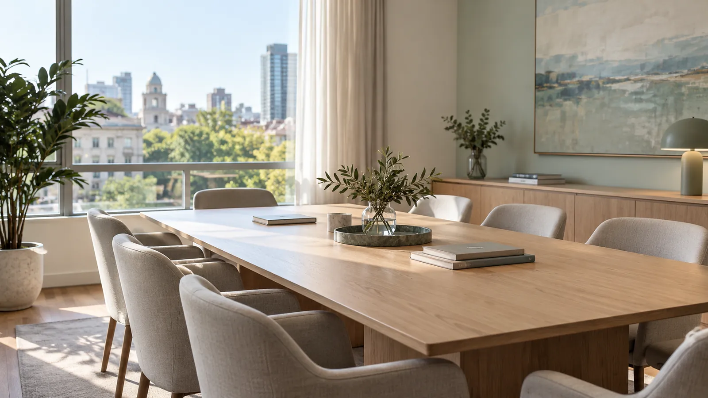
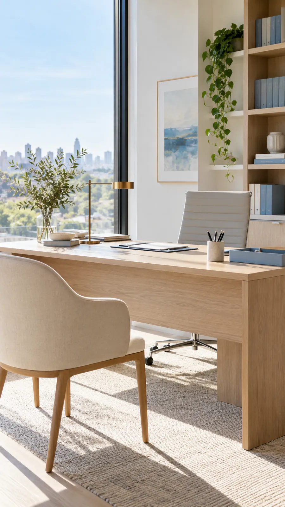
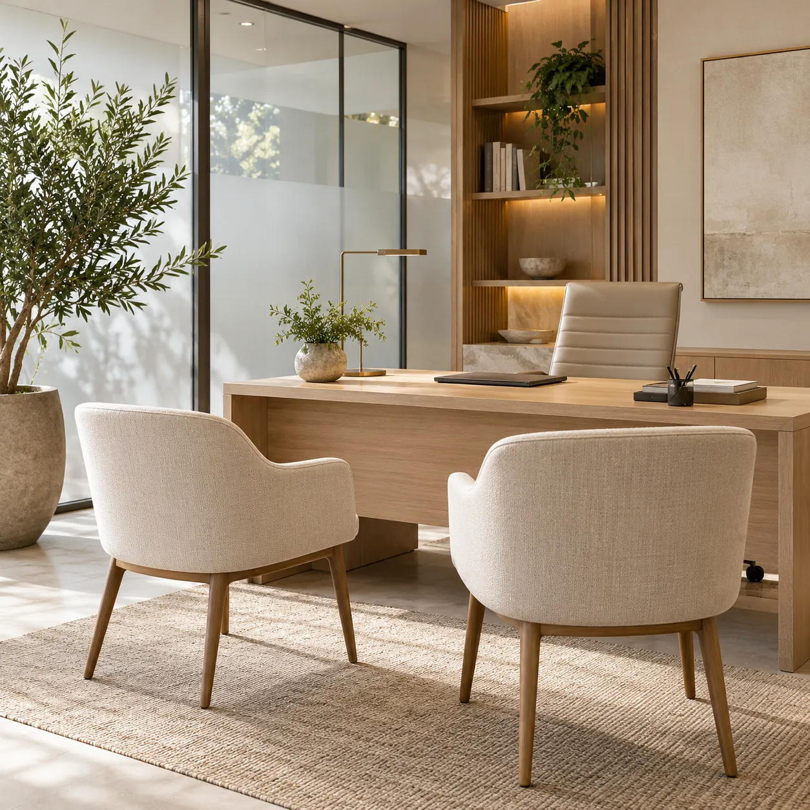

Estudio jurídico · CABA y GBA
Asesoramiento legal para personas y empresas
Accidentes de tránsito y laborales, sucesiones, sociedades y asesoramiento a empresas. Contanos tu caso y te explicamos cómo seguir.

Áreas de práctica
-
Para personas
Accidentes de tránsito
Reclamos por lesiones y daños al responsable y a su aseguradora, en mediación o en juicio.
-
Para personas
Accidentes laborales · ART
Accidentes en el trabajo o en el camino, enfermedades profesionales y rechazos de la ART.
-
Para personas
Sucesiones
Inicio y trámite completo de la sucesión, hasta inscribir los bienes a nombre de los herederos.
-
Para empresas
Sociedades
Constitución de SAS, SRL y SA, estatutos, actas, libros y cambios de socios.
-
Para empresas
Asesoramiento a empresas
Contratos, consultas laborales, cartas documento y reclamos del día a día de tu empresa.
¿No sabés en qué área entra tu caso? Contanos qué pasó y te orientamos.
Escribir por WhatsAppUn estudio para personas y para empresas
Estudio Ayala y asociados acompaña a personas que atraviesan un accidente o una sucesión, y a empresas que necesitan ordenar su sociedad y sus contratos.
Para personas
Reclamos por accidentes de tránsito y laborales, y el trámite de la sucesión de un familiar.
Para empresas
Constitución y vida de la sociedad, contratos y consultas del día a día para prevenir conflictos.
Cada caso empieza igual: escuchamos lo que pasó, ordenamos los papeles y te explicamos el camino antes de dar el primer paso.


Cómo trabajamos tu consulta
-
01
Nos contás tu caso
Por WhatsApp o con el formulario: qué pasó, cuándo y qué papeles tenés.
-
02
Revisamos la documentación
Leemos lo que tengas antes de opinar y te decimos qué falta.
-
03
Te explicamos las opciones
Caminos posibles, plazos y costos, en palabras claras.
-
04
Llevamos adelante el caso
Te avisamos cada avance y seguimos disponibles para tus dudas.
Preguntas frecuentes
¿Qué hago después de un choque?
Si hay heridos, primero la atención médica. Después sacá fotos del lugar y de los vehículos, anotá la patente y el seguro del otro conductor, hacé la denuncia en tu aseguradora y guardá toda constancia médica. Con eso ya podés escribirnos.
La ART rechazó mi accidente, ¿se puede reclamar?
Sí. El rechazo se puede discutir ante la Comisión Médica y, después, en la Justicia. Traé la notificación del rechazo y la denuncia del siniestro para revisarlas.
¿Cuánto tiempo tengo para reclamar?
Depende del tipo de caso, y los plazos corren desde el hecho. Contanos la fecha y te decimos cuánto margen hay: conviene no dejarlo para después.
¿Tienen que estar todos los herederos para iniciar la sucesión?
No. La puede iniciar cualquiera de los herederos, y los demás se presentan durante el trámite.
¿Qué tipo de sociedad le conviene a mi proyecto?
Depende de cuántos socios son, del capital y de cómo quieren repartir decisiones y responsabilidades. Lo vemos juntos y te recomendamos entre SAS, SRL o SA.
¿Puedo hacer la consulta sin ir al estudio?
Sí. Podés empezar por WhatsApp: contanos el caso y te decimos qué documentación mandar.
Hablemos de tu consulta
Contanos tu situación y te decimos cómo podemos acompañarte.
¿Preferís WhatsApp? +54 9 11 3204-9934